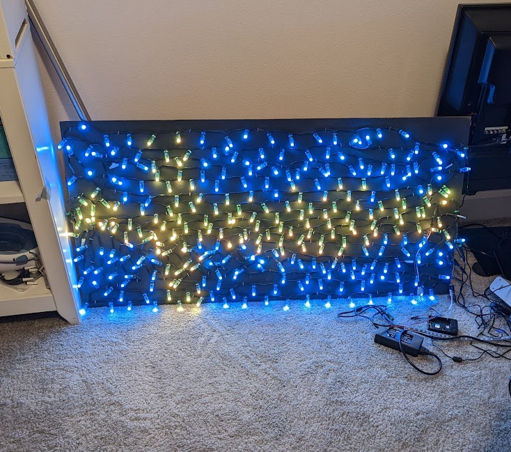

Orion
Andrews
Andrews
Pixeling
Interpreting LEDs as pixels.
Pixeling
So, after creating the spiral and its animated counterpart,
I decided to take on a new challenge. Up until this point, I
had stayed pretty much in the known territory of what you
can do with lights like this. Mathematical patterns have
been delved deeper into by many other people and there is a
whole follow-up video to the video I linked in the
introduction that is a livestream that tests a bunch of user
submitted code. All of this to say that this was a pretty
saturated industry. What I wanted to do was turn the lights
into a display. A dumbed-down version of what you are using
right now. I had no idea what the code would look like and I
only found a few instances of people doing this online.
There were several problems I needed to tackle to get
pixeling to work correctly, least of which was the material
the lights were on. However, despite the fact that I only
implemented a solution to this after getting some prototype
code working, I think that it would be good to start with
this. Taking photos of the LEDs is unpredictable at the best
of times. The lights could be facing the wrong way, you
could be taking all of your photos on a reflective white
background (hint hint), or you could have some random object
that your lens picks up as perfect white for some reason.
Gaussian blur can only take me so far and the smallest error
can cost me a whole 10 minutes of my life. For this reason,
I decided to make a black background for the lights. I also
wanted to create a more crystalline structure for the lights
that would grant more consitency on lighting density. For
this reason, I took the highly in-depth and precise route of
stapling the lights to a board that was painted black.


The first picture is the board drying, the second is lights
when they were just flung and slightly organised on the
board (as well as mapped) and the last picture is of the
crystlline lights structure functioning as a laser pointer.
The stapling took a while to do and taught me that the
electronics were pretty resilient (I stapled straight
through the wire 3 times) and were pretty unlikely to
malfunction even when an unexpected piece of metal was added
to the circuit (staple).
I figured out pretty quickly when trying to organise the lights that it was not going to be as easy as I had hoped. I wanted all of the power connectors to be on the same end of the board so that the cable management was easier but this created a lot of difficulty. The lengths of the strings of lights were just not the right length to go the length of the board an interger number of times. For fun (using a program that I will talk about later) I have created visualiser for the way that the lights are lain out. There are switchbacks as well as crosses in a couple places but all in all, I think I acheived a pretty decent density across the board (pun absolutely intended).
I figured out pretty quickly when trying to organise the lights that it was not going to be as easy as I had hoped. I wanted all of the power connectors to be on the same end of the board so that the cable management was easier but this created a lot of difficulty. The lengths of the strings of lights were just not the right length to go the length of the board an interger number of times. For fun (using a program that I will talk about later) I have created visualiser for the way that the lights are lain out. There are switchbacks as well as crosses in a couple places but all in all, I think I acheived a pretty decent density across the board (pun absolutely intended).
So with the bit about the board out of the way, I can talk
about pixeling. To make something into a display, the first
step is to carve out your pixels. With this setup, it might
seem logical to use a single light for each pixel, and you
would be correct. There is a lack of detail in certain areas
on higher resolution images due to the resolution of my
board being around 5√6 (12 ish) by 10√6 (24 ish) but at this
point, the board's functionality is not as a perfect
monitor.
The general pixeling process is such: the image is translated into pixel-by-pixel color values and the lights are sort of "overlayed" onto the image. The lights find out what color they are supposed to hold based on the pixel they are sitting on and all of that gets shipped off to a final array of lights and their corresponding colors. If you are playing an animation, the process repeats with each sub array that is full of lights and corresponding colors being added to a massive array that represents the whole animation.
The code was somewhat difficult to work out but in the end, it ended up being one of the shortest programs I had written for this project. And most importantly, it works well! Within a certain critera. The lights themselves are not good at displaying brown and they do not have the greatest color accuracy in general. Here are pieces of pixel art I made being displayed on the lights.


The general pixeling process is such: the image is translated into pixel-by-pixel color values and the lights are sort of "overlayed" onto the image. The lights find out what color they are supposed to hold based on the pixel they are sitting on and all of that gets shipped off to a final array of lights and their corresponding colors. If you are playing an animation, the process repeats with each sub array that is full of lights and corresponding colors being added to a massive array that represents the whole animation.
The code was somewhat difficult to work out but in the end, it ended up being one of the shortest programs I had written for this project. And most importantly, it works well! Within a certain critera. The lights themselves are not good at displaying brown and they do not have the greatest color accuracy in general. Here are pieces of pixel art I made being displayed on the lights.

Lastly, I'll talk about an optimization I made to the
lighting.